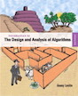

David A. Sykes, Ph.D.
TR 1:00-2:20 P.M. in Olin 116
TR 8:30-10:50, MWF 09:30-11:00, 14:00-15:00. Or by appointment. Or by happenstance.
TR 8:30–10:50 A.M.
MWF 9:30–11:00 A.M, 2:00–3:00 P.M.
Or by appointment or by happenstance.
By the end of the course, you should be able to:
 Introduction to the Design and Analysis of Algorithms, 3rd Edition, by Anany Levitin, ©2012. ISBN 978-0132316811.
We will use three websites regularly:
This term we will be using Piazza for class discussion. The system is highly catered to getting you help fast and efficiently from classmates and me. Rather than emailing questions to me, post your questions on Piazza.
Note: You may post or respond to a post anonymously. Be aware that your post will be anonymous to classmates but not to me.
Moodle. You will submit some assignments in Moodle. Your grades will be recorded in Moodle.
Mimir Classroom. You will submit projects and complete some homework exercises in Mimir Classroom. Access Mimir Classroom via links in Moodle.
You will need a computer in order to work on assignments and access the websites we will use. A laptop computer that you can bring to class is ideal. You will be able to write C and C++ code using the Mimir IDE. However, you may also use an IDE running on your own computer.
You will also need to use Microsoft Word to create a paper for this course. You can download it from Wofford College | MS Office Download.
Your grade for the course will be based on a weighted average of scores for weekly quizzes, programming projects, and a paper and presentation (semester-long project). The usual grading scale applies: 93–100: A, 90–92: A-, 87–89: B+, 83–86: B, 80–82: B-, 77–79: C+, 73–76: C, 70–72: C-, 60–69: D, 0–59: F.
| Component Score | Weight |
|---|---|
| Weekly quizzes | 50% |
| Programming projects | 30% |
| Paper and presentation | 20% |
| TOTAL | 100% |
There will be twelve 5-point quizzes, one given each Wednesday, except for February 9. A weekly quiz encourages you to keep up with the work and helps both you and me assess how well you understand the topics we are covering.
Quizzes will be conducted as follows.
Cell phones, calculators, computer applications, web resources, or other people may not be used during a quiz except for ones you are directed to use.
Programming projects give you practical experience with what we are covering in class.
Point values for projects will vary and will reflect the level of challenge. More challenging projects will have higher point values. The programming projects portion of your grade is based on the simple mean of scores: I will add up all of the points you earned for programming projects and divide that by the number of points that you could have earned.
To get a perfect score on a project, your submission must satisfy all of the requirements set forth in the project’s description and must be submitted by the deadline. If you’d like to incorporate more than the required features in your code, then please do!
Being able to communicate in writing and in speech is important. You will write a paper about an algorithm you developed to solve a problem. You will receive several scores on the paper during the semester: a score for your first draft, a score for your second draft, and a score for your final draft.
During the final exam period, you will present your paper to the class. A rubric for the presentation will be provided in advance.
| Component Score | Weight |
|---|---|
| First draft | 5 points |
| Second draft | 5 points |
| Final draft | 10 points |
| TOTAL | 20 points |
Homework will be assigned regularly, but will not be collected and graded. Bring written answers to assigned problems to class with you. I encourage you to work on homework assignments with other students in the class.
You are expected to attend each class meeting.
Do not attend class or other on-campus events if you are not feeling well.
The General Policy Regarding Attendance in the Wofford College Student Handbook makes you responsible for catching up on any missed classes. Some class meetings might be accessible on Zoom. However, you should find someone in the class to take notes for you when you are absent.
If you have an excused absence on the day of a quiz and you have contacted me in advance, then you and I will work out a way to make up the quiz. Otherwise, I will assign you a score of zero on the quiz. You may still submit a rework for that quiz.
You must be present during the final exam period.
During class meetings you may not use a phone or a laptop unless you have an approved accommodation that allows you to use a laptop or unless I direct you to do so. You may use a tablet to take notes as long as you use a stylus. Take notes on paper. An open laptop is a distraction for you, for others around you, and for me.
I will make every effort to keep the office hours listed at the top of this syllabus. If I must cancel or move office hours, I will announce the change in Piazza.
Do not make an appointment to meet with me during office hours. I will be working in my office and you can meet with me there.
I appreciate your contacting me during my office hours since it is time I have set aside and cannot easily use for another purpose. However, I realize that you might have conflicts. You are welcome to request an appointment. If you do, provide me with a list of some times that you are available to meet. Please do not ask me when I am available. Or you are welcome to drop by my office if you think I might be there.
You are expected to meet deadlines for projects and drafts of your paper. You may be able to submit work late if both of these conditions are met:
It will be difficult to get an extended deadline if you cannot demonstrate that you had gotten started on the work.
Post questions and comments about this course on the Q&A page at Piazza. You are encouraged to respond to a question or to edit a response to a question. We are all learning together. If you send me a question via email or via private Piazza post that should be posted publicly at Piazza, my reply will direct you to post your question publicly.
Do not post working code at Piazza. Do not include in a response either “fixed” code or a detailed description of how to change code to get it to work. It is okay to post non-working code.
I usually respond to email messages sent Sunday through Thursday within 24 hours. I will usually respond within 48 hours to messages sent on a Friday or a Saturday. I usually respond much sooner to Piazza posts since I have the Piazza app on my phone and receive notifications. However, keep in mind that teaching is my job and not my whole life.
You can send me email messages for private matters, such as letting me know you will be absent or that you'd like to schedule a meeting. However, I prefer that you post a private message via Piazza.
The Honor Code requires faculty, staff, and students to maintain a high standard of individual honor and integrity. Work represented as your own must be your own.
I encourage you to collaborate with others in the class—that is, help or get help from others. However, you may not write code for another student or provide code to copy. Doing any of these things is a violation Honor Code.
Mimir has a plagiarism detection feature based on Moss that estimates the similarity of a program compared to both programs submitted by other other students’ as well as code available on the internet. I will utilize this tool to determine how similar submitted programs are.
In summary, if you have written the code in a submission entirely on your own, you will have no trouble answering any questions I have about that code. If you copied code from other sources, then you are responsible for fully understanding, and being able to explain the code you copied. Failure to do so is evidence of plagiarism and will be treated as such.
Don’t cheat because you are up against a deadline. Start each assignment as soon as it is given. If you run into a glitch:
If you need accommodations, go to the Student tab in myWofford and investigate the Request Accommodations channel. I’ll make every effort to work with you. Take care of this during the first week of classes and before the first quiz.
We will delve at first into the C programming language. Then we will work quickly through the first parts of Chapters 1 through 10 of the Levitin book. Then we will circle back to study more deeply each strategy covered by those chapters. Along the way, we will work on your paper.
The schedule is subject to change.
| Week | Topics |
|---|---|
| FEB 7 |
Review of COSC 350. Levitin Chapter 1 Introduction. |
| FEB 14 |
Finding a problem to solve. Levitin Chapter 2 Fundamentals of the Analysis of Algorithm Efficiency and Appendix A Useful Formulas for the Analysis of Algorithms. |
| FEB 21 |
The C programming language. Starting your paper. |
| FEB 28 |
Algorithm strategies overview Solving your problem and pseudocode. |
| MAR 7 | Chapter 3 Brute Force and Exhaustive Search. |
| MAR 14 | Levitin Chapter 4 Decrease-and-Conquer. |
| MAR 21 | Levitin Chapter 5 Divide-and-Conquer. |
| MAR 28 | Levitin Chapter 6 Transform-and-Conquer. |
| APR 04 | Spring break. |
| APR 11 |
Levitin Chapter 7 Space and Time Trade-Offs. C++ classes |
| APR 18 | Levitin Chapter 8 Dynamic Programming. |
| APR 25 |
Levitin Chapter 9 Greedy Technique. C++ inheritance |
| APR 02 |
Levitin Chapter 11 Limitations of Algorithm Power. Levitin Chapter 12 Coping with the Limitations of Algorithm Power. C++ templates and overloading |
| MAY 09 |
Levitin Epilogue Catch-up and wrap-up. |
| MAY 16 |
Final exam week Presentations will be given on Wednesday, May 18 from 2:00-5:00 P.M. |